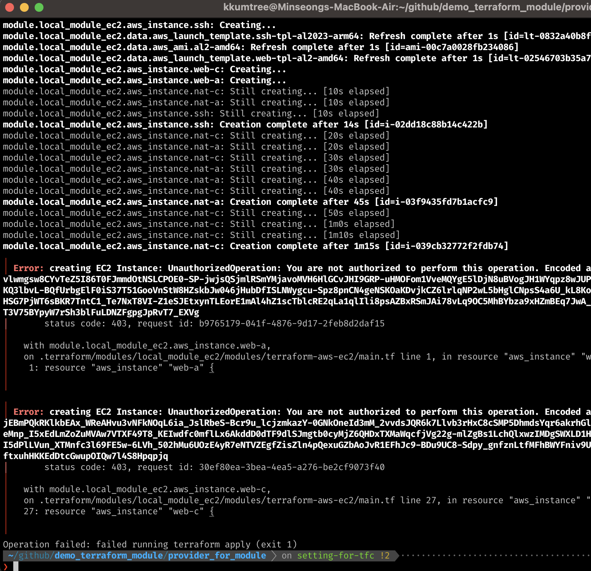
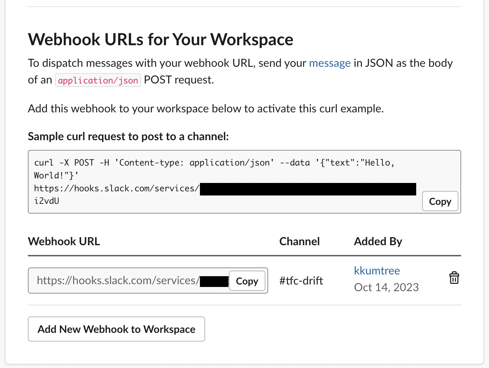

CloudNet@에서의 Terraform 스터디가 끝나고 나서,
테라폼을 실제 운영 상황에 도입하면서 마주할 수 밖에 없는 드리프트(drift) 상황에 대해
이해해보는 시간을 가졌습니다.
참고) TFC에서의 Drift Detection 기능은 현재 TFC Plus 에디션에서 지원됩니다.
1. 용어 이해해보기
사실은 작년부터 테라폼을 접하고나서, IaC라는 개념에 꽂히기만 했지
운영 입장에서 마주했었던 수많은 시행착오들을 흔한 유저에러로만 생각해왔었습니다.
스터디에 참여하면서 종종 ‘드리프트’라는 단어를 듣고, 찾아보니
상당부분이 이에 속하는 상황이라는 것을 알 수 있었습니다.
(1) Drift?
글 작성을 위해 찾아본 기술적 Drift는 본래 주행에 있어서의 그것과
크게 차이가 없음을 알 수 있었습니다.
현재까지 이해한 바로는 엔지니어의 계획에 의해 구성된 설계 내에서
리소스가 생성되고 관리가 되어야 하는데,
(1) 시간이 흐르거나 (2) 일시적이거나 급한 상황에 따라
계획된 구성을 벗어나는 현상 그 자체라고 이해해보았습니다.
(2) Terraform에서의 Drift
과거에 제가 테라폼을 처음 접하고 적용하는 상황에 비추어보면,
제가 요청받은 사항(주로, 테스트 개발용 인스턴스, 도메인, AMI 등)을
tf코드로 구성한 후,
- 태그를 고치는 작업
- 테스트서버용 도메인을 수정하는 작업
위와 같은 자잘한 사항을 처음에 값을 바꾸고난 이후에,
새로이 요청받은 리소스를 셋업할 때 처음 마주하였습니다.
좀더 일반적으로 풀어보면, 테라폼으로 환경을 구축한 이후에
- CSP에서 제공하는 CLI나 웹콘솔 등에서 수동으로 VM 크기 등을 변경하는 상황
- CloudFormation(AWS), ARM템플릿/Bicep(Azure), Chef, Puppet
또는 Ansible 같이 Terraform에 의해 자동화되지 않은 프로세스를 실행하는 상황
으로 인해서 Terraform의 상태 파일이 감지하지 못하는
변경 사항이 발생하는 경우라고 하네요.
(3) Drift 발생 상황이 문제가 되는가?
보통은 terraform plan이나 apply(plan이 선행됨)를 통하면,
이러한 변경사항(drift)를 확인할 수 있기 때문에 큰 이슈라고 생각하지 않을 수 있습니다.
찾아보니, 일부 변경사항은 확인이 안될 수도 있기 때문에
- 수동으로 해결해야하는 상황이 발생할 수 있습니다.
- 더 나아가, 테라폼 외부에서 변경된 사항을 되돌리는 과정에서
리소스를 쓰지 못할 수도 있고, 배포 실패를 초래할 수 있습니다.
2. Drift에 대한 알림 및 설정 w/Terraform Cloud
그러면 이러한 사항에 대해 알림을 설정하여,
인프라 관리자가 사항을 적시에 알 수 있도록 해보겠습니다.
현재 TFC Free를 써보고 있기에, 모든 테라폼 작업 요청에 대해 알람을 걸어보겠습니다.
(1) Terraform Cloud 연결
예전 포스팅에서 다룬 테라폼 코드입니다
-
예제 소스: Github (브랜치명:
setting-for-tfc) -
TFC에서 안내하는 대로 root 모듈 내의 terraform 부분을 수정합니다.
# demo_terraform_module/provider_for_module/main.tf
terraform {
cloud {
organization = "kkumtree"
workspaces {
name = "t101"
}
}
required_providers {
aws = {
source = "hashicorp/aws"
version = "~> 5.17.0"
}
external = {
source = "hashicorp/external"
version = "~> 2.3.1"
}
}
}
- 이후에는 TFC에서 쓸 AWS 접속 정보를 셋업합니다. (택일)
(1) TFC용 IAM User를 생성하여 연결하거나,
(2) TFC용 OIDC 프로바이더를 생성하여 연결합니다.
- IdP를 선택하였고, 예제 파일을 구동하기 위해 권한은
AmazonEC2FullAccess,iam:PassRole을 할당하였습니다.
IAM Role을 호출하기에, Role을 설정하지 않으면 에러가 발생합니다.

(2) Slack 알림 설정
- Slack 알람 설정 인터페이스가 좀 많이 바뀌었는데,
큰 틀에서는 달라진게 없어서 웹훅URL을 발급받아 연결할 수 있었습니다.



- TFC에서는 아래와 같이 설정하면 됩니다.

- 예전에 local 백엔드에서 했던대로 하면 될 줄 알았는데,
TFC에서는 모듈 경로를 로컬의 상대경로로 지정하면 오류가 발생합니다.

-
github에 예제 코드를 공개로 저장했었기에,
예제에 안내된 방식git::https://github.com로 했다가, 에러가 났습니다.
차분히, Github를 참조하여 아래와 같이 지정하였습니다.git::git@github.com:kkumtree/demo_terraform_module.git//modules/terraform-aws-ec2?ref=setting-for-tfc -
//: 테라폼이 해당 부분 이후를 서브 디렉토리로 인식할 수 있게 합니다.
-
ref: 브랜치, 혹은 태그. 본 포스팅에서도 브랜치를 선택하는 용도로 사용하였습니다.

- 제대로 수정한 이후에 module을 git에서 가져오는 것을 볼 수 있습니다.

- 테라폼 명령어를 입력할 때마다, 알림을 받아볼 수 있었습니다.
3. (번외) drift 알림을 만들어서 써보기
- 다른 서드파티들을 보니 Cron작업으로 drift detection을 하는 것 같아,
Bash 스크립팅을 통해 간이로 알림을 보내는 작업을 해보겠습니다. - 단, 현재 버전에서는 output파일을 로컬에 내보내려면,
TFC의 기본 실행 모드(Default Execution Mode)를
Remote에서Local로 변경해야 합니다.
- 고유의 강점인 웹 콘솔에서의 협업-review- 기능을 포기한다고 생각하면 됩니다.
대신에, 사용자 지정 모듈을 다시 원래 상대경로로 로드할 수 있었습니다. - 실제 운영용으로 한다면, plan 중 Lock이 걸릴 것이므로 유의.
#!/bin/bash
terraform plan --detailed-exitcode -out=tf.plan 2> /dev/null || ec=$?
case $ec in
0) echo "No Changes Found": exit 0;;
1) printf '%s/n' "Command exited with non-zero";exit 1;;
2) echo "Changes found";
MESSAGE=$(terraform show -no-color tf.plan| awk '/#/,EOF { print $0 }');
curl -X POST -H 'Content-type: application/json' --data "{'text':'$MESSAGE'}" $SLACK_WEBHOOK
esac
-
위에 쓰여진 $SLACK_WEBHOOK 은 웹훅 URL 주소를 bash 환경변수로 지정하였습니다.
-
포스팅을 위해 스크린샷을 저장하려고 하니, 불필요한 변경점이 발생합니다.
- 그래서, AMI 관련 lifecycle 예외조건을 걸어
변경점을 줄인 뒤 해당 쉘을 실행해보겠습니다.
# In EC2 resource block
lifecycle {
ignore_changes = [
tags,
ami,
]
}
- 이제, Bastion 인스턴스(LAB-SSH)에 접속하는데 쓰일 SG의 IP주소만 바꿨을 때,
이에 대한 드리프트만 발생됨을 볼 수 있습니다.

- 예제이기 때문에, 알림에 있어 불필요한 정보까지 나열되었지만
변경사항(drift)이 있을 경우에만 알림을 받는다는 목적은 달성하였습니다.
local모드로 실행할 경우, state파일이 저장되는 방식도 다소 달라짐을 볼 수 있습니다.
4. 마치며
소감) 아직도 갈길이 멀지만, 잘못 알고있었던 것을 바로잡을 수 있었던 귀한 5주 간의 스터디였습니다. (__)
- Drift에 대해 이해해보는 시간이 되었습니다.
- 원격지(VCS)에서 sub-directory 방식으로 사용자 지정 모듈을 호출하였습니다.
- Slack 웹훅을 통하여, TFC로부터의 알림을 수신했습니다.
- TFC의 실행모드를 변경하여, 차이를 살펴보았습니다.
- lifecycle을 처음 사용해보았고, 이를 통해 불필요한 작업을 줄일 수 있었습니다.
- 모니터링 관점에서 TFC Plus를 고려해보는 것도 좋은 방법이 될 수 있을 것 같습니다.
5. References
- CloudNet@
- 테라폼으로 시작하는 IaC
- Trend Micro/Terraform Tutorial: Drift Detection Strategies
- GitHub/terraform
- hashicorp/Modules in Package Sub-directories
- hashicorp/Manage resource drift
- hashicorp/discuss
- hashicorp/resource-lifecycle
- hashicorp/The lifecycle Meta-Argument
- spacelift/Terraform Drift – How to Detect and Manage It
- sendbird/Infrastructure Management using Terraform
- Medium/Send Terraform Drift Status To Slack Channel

kkumtree
Source code on GitHub
© 2025 kkumtree and contributors All rights reserved.
Licensed under
CC BY-NC-ND 4.0